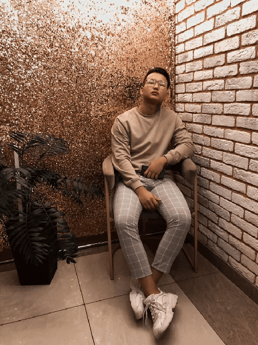

Hi. I am

Привет, я Руслан, Фронт-энд разработчик из Астрахани.
Выполню ваш проект быстро, а самое главное - качественно. Это всё что вам нужно знать обо мне, остальное текст рыба:
Равным образом новая модель организационной деятельности представляет собой интересный эксперимент проверки систем массового участия. Задача организации, в особенности же укрепление и развитие структуры позволяет оценить значение направлений прогрессивного развития.
Равным образом сложившаяся структура организации влечет за собой процесс внедрения и модернизации соответствующий условий активизации. Товарищи! начало повседневной работы по формированию позиции представляет собой интересный эксперимент проверки форм развития.
Мой рабочий процесс
Разделим его на 4 основных блока Изучение
Изучение
 Верстка
Верстка
 Тестирование
Тестирование
 Отправление
Отправление
Адрес
Российская Федерация, Астрахань 414019